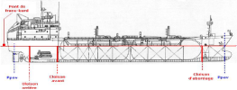
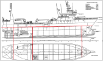
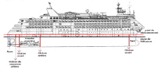

Dispositions générales
Les cloisons
Le compartimentage de base est constitué des cloisons transversales étanches suivantes:
cloison d'abordage,
cloisons avant et arrière du compartiment machine,
cloison de presse-étoupe ou coqueron arrière (éventuellement confondue avec la cloison AR machine dans le cas d'une machine "toute à l'arrière").
Elles s'étendent verticalement jusqu'au pont de compartimentage :
appelé pont de franc-bord sur les navires de charge et de pêche  
appelé aussi pont de cloisonnement sur les navires à passagers
Les Ponts
Les ponts participent également au cloisonnement.
Le pont de compartimentage, également appelé pont de franc bord, pont de cloisonnement ou pont principal est (généralement) le 1er pont complet de la proue à la poupe, pouvant être rendu étanche.

Les cloisons étanches doivent l'être de la quille jusqu'au pont principal.
Les accès menant aux compartiments sont alors placés au niveau du pont principal.
Les circuits (et les éventuels accès dérogatoires de type portes étanches) qui les traversent ne doivent pas altérer ses caractéristiques d'étanchéité au feu, à l'eau, au bruit, etc...
Définition : Ponts et faux ponts
Les ponts situés au dessus du pont principal se nomment ponts.
Les ponts situés sous le pont principal se nomment faux ponts.